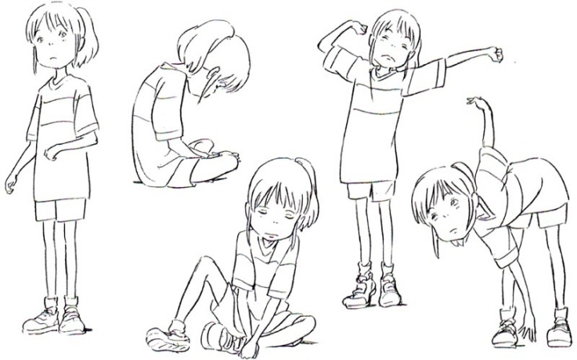

宫崎骏
日本动画师、动画导演、漫画家

宫崎骏在日本动画界占有超重量级的地位。图为千与千寻。
老爷子的动画创作史
- 1941 - 出生于东京都文京区，在四个兄弟中排名第二，由于身体不好，故不擅长运动，也因此对静态的绘画很有天分
- 1963 - 进入东映动画公司，认识了在他动画生涯中有着重要影响力的前辈高畑勋，在此期间参与了《狼少年肯》等动画的制造
- 1982 - 《Animage》杂志连载《风之谷》
- 1986 - 创作《天空之城》，讲述了两个孤儿的冒险故事，他们试图寻找一个漂浮在天空中的神奇岛屿
- 1988 - 《龙猫》则描述两个女孩与森林精灵之间的互动与冒险
- 1997 - 《幽灵公主》，被认为是宫崎骏最暴力的电影之一，这部电影在日本获得巨大的商业成功，并最终在日本电影金像奖夺得最佳影片奖
- 2001 - 《千与千寻》日本上映，并打破了日本的票房记录；获得日本电影金像奖最佳影片奖
- 2004 - 《哈尔移动城堡》，电影改编英国小说家戴安娜·韦恩·琼斯的奇幻小说。于威尼斯电影节首映并以动画技术获得金奥萨拉奖
- 2013 - 推出《起风了》,获得了美国国家评论会奖，第79届纽约影评人协会奖，第34届波士顿影评人协会奖，第18届圣地牙哥影评人协会奖
- 2014 - 安妮奖：最佳编剧奖
- 2020 - ......